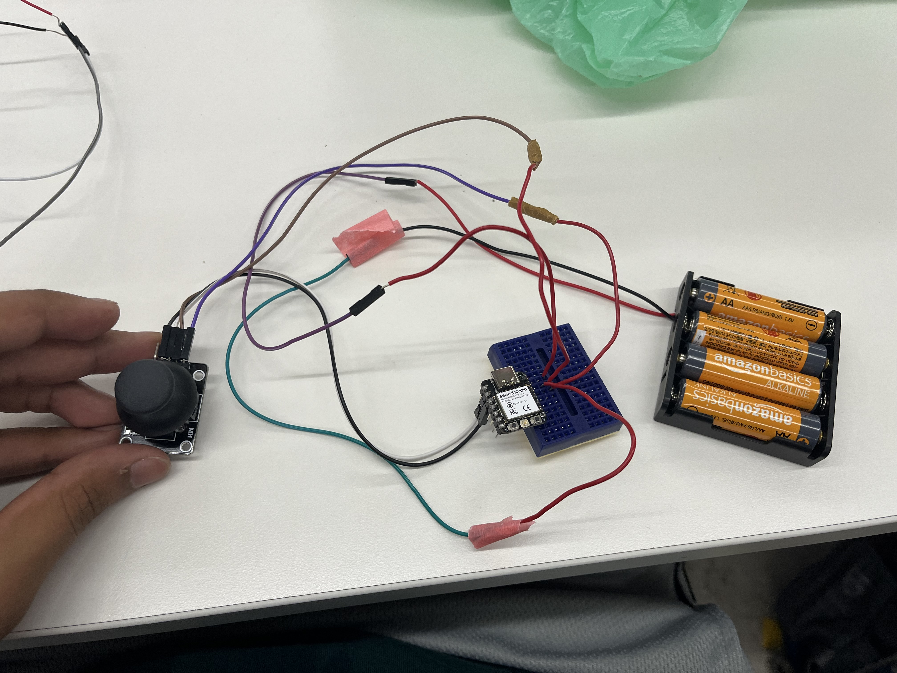
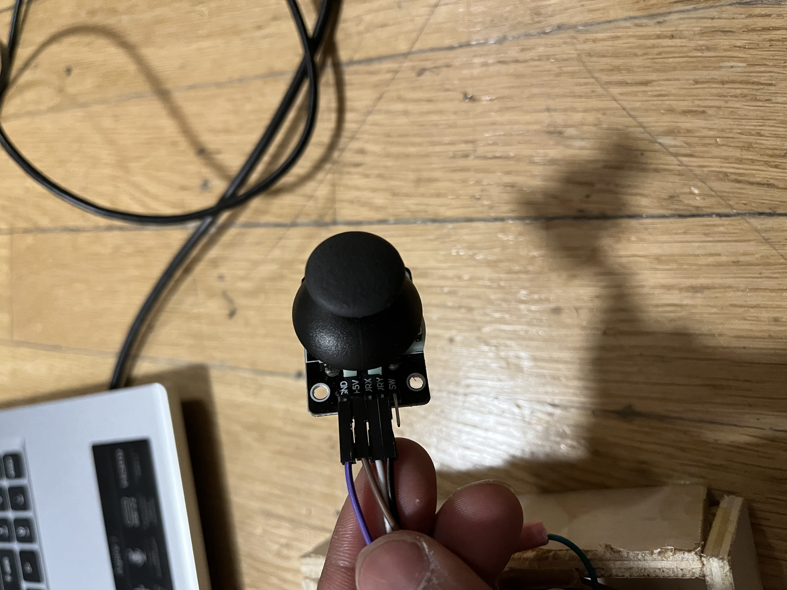

<br>
#### Week 9: ESPNow
<html>
<div class="myDiv" style><h3>Radio and ESPNow</h3></div>
<div class="vidDiv">
<div class="myDiv">
<h2>Controlling Wheels remotely using a joystick</h2>
</div>
<div class="leftmyDiv">
<h2>Materials</h2>
<ul>
<li>ESP32 WROOM DA Module</li>
<li>ESP XIAO</li>
<li>L9110 Motor Driver</li>
<li>2 Yellow Motors</li>
<li>2 Wheels</li>
<li>Small Breadboard</li>
<li>Wires</li>
</ul>
<br><br>
Both the MAC addresses of the two ESPs were attained and therefore, the first step was to code the joystick to send numerical values over ESP-NOW to the ESP32-WROOM
</div>


<div class="myDiv">
First is the wiring of the joystick. The GND and 5V pins of the Joystick were connected GND and 3.3V respectively. VRX and VRY were connected to ANALOG pins (D0 and D3).
</div>
<img src="./IMG-4903.PNG" height = "400px" alt = 09_Radio>
<div class="myDiv">
Then the two wheels also need to be controlled so a L9110 motor driver and a microcontroller (ESP32 WROOM DA). Each motor is connected to the L9110 and the A and B pins of the L9110 connect to the PWM pins of the ESP32 (in this case IO16, IO17, IO18, IO19)
</div>
</div><br>
<div class="myDiv">
And now for Coding. Let's start with <strong>the joystick</strong>
</div>
<div>
<pre>
<code class="language-arduino">
const int joystick_x_pin = A1;
const int joystick_y_pin = A2;
#include "esp_now.h"
#include "WiFi.h"
uint8_t broadcastAddress[] = {0xC8, 0xF0, 0x9E, 0xAE, 0xD7, 0x80};
//Here you should put in MAC address of the receiver (in my case, the car)
//Just replace for example 0xC8 with 0xAA where the letters represent the numbers of the MAC address, remember to have the '0x' part in
typedef struct struct_message {
float c;
float d;
} struct_message;
struct_message myData;
//This is the data you want to send so make variables for the data, I had to send float values but you can send anything
esp_now_peer_info_t peerInfo; //new var for peer
void OnDataSent(const uint8_t *mac_addr, esp_now_send_status_t status) {
Serial.print("\r\nLast Packet Send Status:\t");
Serial.println(status == ESP_NOW_SEND_SUCCESS ? "Delivery Success" : "Delivery Fail");
}
//Check if it actually sent
void setup() {
// put your setup code here, to run once:
Serial.begin(115200); /* Define baud rate for serial communication */
// Set device as a Wi-Fi Station
WiFi.mode(WIFI_STA);
// Init ESP-NOW
if (esp_now_init() != ESP_OK) {
Serial.println("Error initializing ESP-NOW");
return;
}
// Once ESPNow is successfully Init, we will register for Send CB to
// get the status of Trasnmitted packet
esp_now_register_send_cb(OnDataSent);
// Register peer
memcpy(peerInfo.peer_addr, broadcastAddress, 6);
peerInfo.channel = 0;
peerInfo.encrypt = false;
// Add peer
if (esp_now_add_peer(&peerInfo) != ESP_OK){
Serial.println("Failed to add peer");
return;
}
}
void loop() {
// put your main code here, to run repeatedly:
int x_adc_val, y_adc_val;
float x_volt, y_volt;
x_adc_val = analogRead(joystick_x_pin);
y_adc_val = analogRead(joystick_y_pin);
x_volt = ( ( x_adc_val * 3.3 ) / 4095 ); /*Convert digital value to voltage */
y_volt = ( ( y_adc_val * 3.3 ) / 4095 ); /*Convert digital value to voltage */
Serial.print("X_Voltage = ");
Serial.print(x_volt);
Serial.print("\t");
Serial.print("Y_Voltage = ");
Serial.println(y_volt);
myData.c = x_volt; //Now you define the variables if you want to send sensor data
myData.d = y_volt; //Remember to have 'myData.' in front of variable
// Send message via ESP-NOW
esp_err_t result = esp_now_send(broadcastAddress, (uint8_t *) &myData, sizeof(myData));
if (result == ESP_OK) {
Serial.println("Sent with success");
}
else {
Serial.println("Error sending the data");
}
Serial.println(result);
delay(10);
}
</code>
</pre>
</div>
<br>
<div class="myDiv">
With this code, A message (struct_message) is sent through radio to MAC address that is already set up as a Wifi Station (can receive remote inputs). This message is continuosly sent because it changes in the loop as it is sending refined sensor data from the joystick.<br><br>
Next up, <strong>the receiver</strong>
</div>
<div>
<pre>
<code class="language-arduino">
const int A1A = 16;
const int A1B = 17;
const int B1A = 18;
const int B2A = 19;
float x_volt, y_volt;
//just defining variables for my code
#include "esp_now.h"
#include "WiFi.h"
//include these libraries in both codes
// REPLACE WITH THE MAC Address of your receiver. Code is the same for both boards, with the exception of the following line.
uint8_t broadcastAddress[] = {0x34, 0x85, 0x18, 0x00, 0x93, 0x00};
typedef struct struct_message {
float c;
float d;
} struct_message;
struct_message myData;
void OnDataRecv(const uint8_t * mac, const uint8_t *incomingData, int len) {
memcpy(&myData, incomingData, sizeof(myData));
Serial.print(myData.c);
Serial.println(myData.d);
}
//Checking if values have actually been received
void setup() {
// Initialize Serial Monitor
Serial.begin(115200);
// Set device as a Wi-Fi Station
WiFi.mode(WIFI_STA);
// Init ESP-NOW
if (esp_now_init() != ESP_OK) {
Serial.println("Error initializing ESP-NOW");
return;
}
// Once ESPNow is successfully Init, we will register for recv CB to
// get recv packer info
esp_now_register_recv_cb(OnDataRecv);
pinMode(A1A, OUTPUT);
pinMode(A1B, OUTPUT);
pinMode(B1A, OUTPUT);
pinMode(B2A, OUTPUT);
//set the OUTPUTs
/* Define baud rate for serial communication */
}
void loop() {
float x_volt = myData.c;
float y_volt = myData.d;
//Use received code in order to perform functions
Serial.print("X_Voltage = ");
Serial.print(x_volt);
Serial.print("\t");
Serial.print("Y_Voltage = ");
Serial.println(y_volt);
if((x_volt >= 3)&&(y_volt>0.85)&&(y_volt<2.1)){
digitalWrite(A1A, LOW);
digitalWrite(A1B, HIGH);
digitalWrite(B1A, LOW);
digitalWrite(B2A, HIGH);
}else if ((x_volt <= 0)&&(y_volt>0.85)&&(y_volt<2.1)){
digitalWrite(B1A, HIGH);
digitalWrite(B2A, LOW);
digitalWrite(A1A, HIGH);
digitalWrite(A1B, LOW);
}else if ((y_volt>=3)&&(x_volt>0.85)&&(x_volt<2.1)){
digitalWrite(A1A, LOW);
digitalWrite(A1B, HIGH);
digitalWrite(B1A, HIGH);
digitalWrite(B2A, LOW);
}else if ((y_volt <=0.5)&&(x_volt>0.85)&&(x_volt<2.1)){
digitalWrite(A1A, HIGH);
digitalWrite(A1B, LOW);
digitalWrite(B1A, LOW);
digitalWrite(B2A, HIGH);
}else{
digitalWrite(A1A, LOW);
digitalWrite(A1B, LOW);
digitalWrite(B1A, LOW);
digitalWrite(B2A, LOW);
}
delay(5);
}
</code>
</pre>
</div>
<br>
<div class="myDiv">
With this code, A message (struct_message) is received through radio to MAC address that is already set up as a Wifi Station (can receive remote inputs). This message is then used in the code to control the motor direction (forward, backward, right, left) <br><br>
Therefore the wheels can move from Remote Control<br>
Here is a video:
</div><br>
<div class="vidDiv">
<div><video height="500" controls>
<source src="./IMG-4732.mp4" type=video/mp4>
</video></div>
</div>